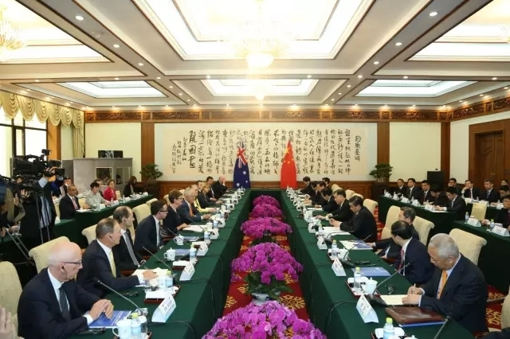
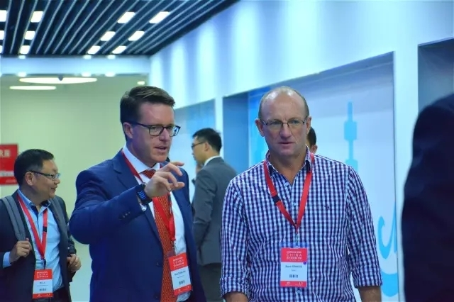
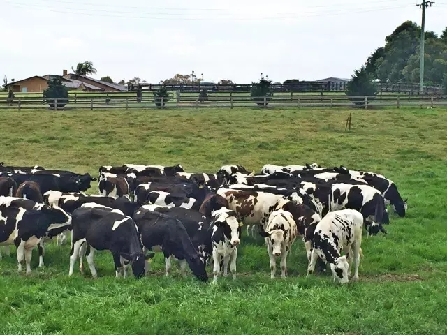
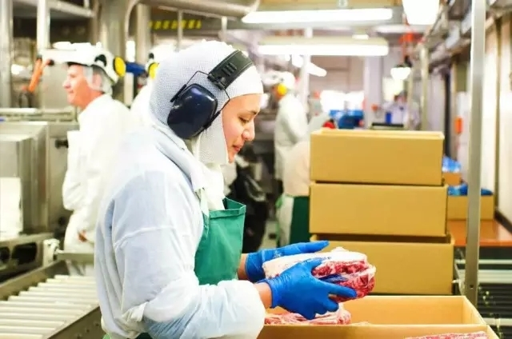

2016.4.15
【舟山专题】中澳总理见证舟山中澳现代产业园项目签署

2016年4月14日，中华人民共和国浙江省人民政府（以下简称浙江省政府）和澳大利亚贸易委员会在北京签订合作备忘录。作为本次澳大利亚总理特恩布尔访华的成果之一，国务院总理李克强和澳大利亚总理特恩布尔到场见证协议签署。为扩大双方企业经济贸易合作的广度和深度，浙江省政府和澳大利亚贸易委员会，就支持中澳现代产业园（舟山）项目事宜，达成一系列协议。
根据协议，双方支持在浙江舟山群岛新区建设中澳现代产业园（舟山）项目。按照规划，产业园作为自由贸易区域，将打造高端动物蛋白、粮油、水产品进境加工园区和铁矿石、煤炭等大宗生产资料加工、交易中心，辅以金融、商务、信息等现代服务业。在中澳自贸协定的基础上，充分发挥舟山江海联运服务中心的作用，积极参与推进一带一路和长江经济带国家战略的实施。同时，澳大利亚贸易委员会还将积极推动澳方企业落户中澳现代产业园（舟山），并为浙江企业赴澳大利亚投资提供便利。
2016年2月25日，浙江省政府与新希望集团、嘉实基金在杭州签订战略合作框架协议。该框架协议内容之一即是设立海外农业发展基金，用于推动中澳现代产业园（舟山）建设，投资具有战略意义的海外农业资产与产业公司等。根据协议，海外农业发展基金在2016年初成立，一期规模30亿人民币，其中，浙江省政府出资10亿人民币并辅以优惠政策支持。其中，中澳现代产业园（舟山）项目总投资不低于100亿元。
随着两国总理见证签署的协议生效，中澳现代产业园（舟山）的建设将具备一系列便利条件，有助于打造高端动物蛋白进境加工园区，推动中澳间农产品食品进口原料加工与贸易服务的发展。中国与澳大利亚之间存在着很强的资源和市场互补性。澳大利亚具备优质的动物蛋白资源，中国则存在迅速升级的健康、安全食品需求，中澳两国间的商业合作存在巨大潜力。
这一合作也是2014年由习近平主席及时任澳大利亚总理阿博特见证签署的中澳农业及食品安全百年合作计划（ASA100）下的重大成果，将进一步推动中澳两国在包括农业与食品领域在内的多方面深度合作和贸易往来，也会为参与ASA100计划的中澳双边企业及投资者带来新的机会。